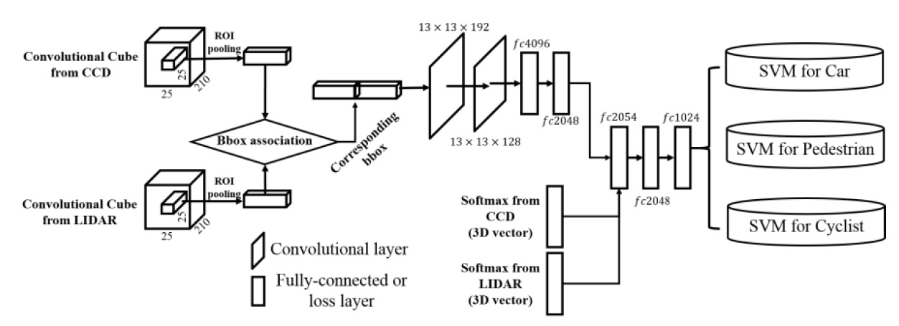

|

|
To understand driving environments effectively, it is important to achieve accurate detection and classification of objects detected by sensor-based intelligent vehicle systems, which are significantly important tasks. Object detection is performed for the localization of objects, whereas object classification recognizes object classes from detected object regions. For accurate object detection and classification, fusing multiple sensor information into a key component of the representation and perception processes is necessary. In this paper, we propose a new object-detection and classification method using decision-level fusion. We fuse the classification outputs from independent unary classifiers, such as 3D point clouds and image data using a convolutional neural network (CNN). The unary classifiers for the two sensors are the CNN with five layers, which use more than two pre-trained convolutional layers to consider local to global features as data representation. To represent data using convolutional layers, we apply region of interest (ROI) pooling to the outputs of each layer on the object candidate regions generated using object proposal generation to realize color flattening and semantic grouping for charge-coupled device and LIght Detection And Ranging (LIDAR) sensors. We evaluate our proposed method on a KITTI benchmark dataset to detect and classify three object classes: cars, pedestrians and cyclists. The evaluation results show that the proposed method achieves better performance than the previous methods. Our proposed method extracted approximately 500 proposals on a 1226 x 370 image, whereas the original selective search method extracted approximately 10^6 x n proposals. We obtained classification performance with 77.72% mean average precision over the entirety of the classes in the moderate detection level of the KITTI benchmark dataset.
Sang-Il Oh and Hang-Bong Kang
Sensors, 17(1), p. 207, 2017.01.22
[Paper] [Video] [BibTeX]
Sang-Il Oh and Hang-Bong Kang
Sensors, 17(4), p. 883, 2017.04.18
[Paper] [Project page] [BibTeX]